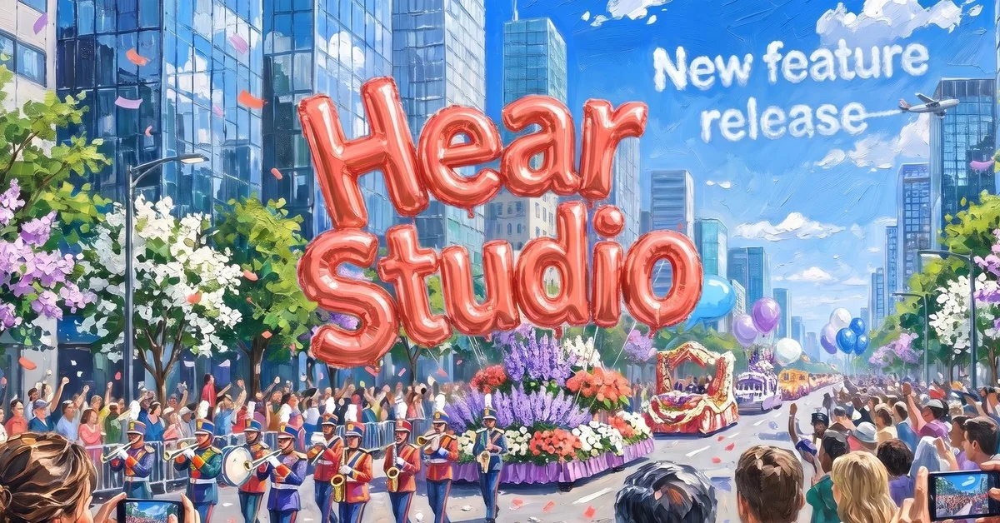
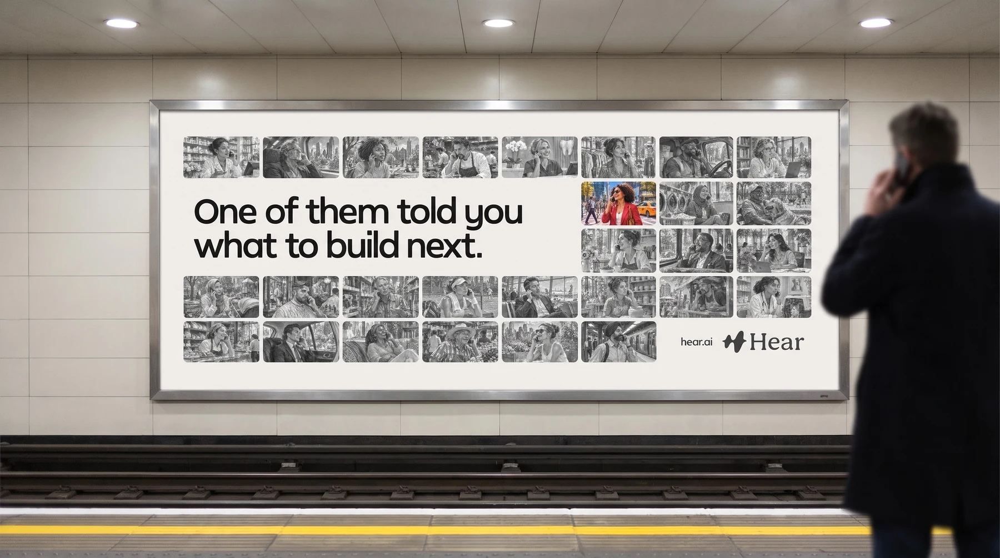

Case study · Brand & website
Hear's new brand puts the message inside the picture
Hear is an AI platform that reads every call a company's contact center takes. I gave it a new identity on one idea: the line is part of the painted scene, never a caption on top.
- For
- Strangers meeting Hear for the first time: in the feed, on the site, on a station wall.
- The problem
- One brand for screens and print, where a single picture tells a stranger what Hear does.
- What I did
- The mark, nine colors, one typeface and a painted city. I designed and built the site.
- Where it stands
- The site is on staging, before release. The campaign, the sign and the tote are mockups.
- 1The message lives inside the picture. A plane writes the claim, 100% coverage, across the sky.
- 2One mark, dark on paper, on the site, the posts and the tote.
- 3Nine colors, shared by the screens and the paintings.
The idea
Hear hears every call, not a sample, and the painting shows it
Hear's case in one line: "A sample hears 2%. Hear hears 100%." Checking a sample of calls means hearing only a small share of them; Hear's AI reads all of them. The post for that line doesn't caption the claim. It paints it.

- 12%: a cart with two balloons, the share a sample hears.
- 2100%: a cart lifted off the ground by a hundred. The numbers are the only words.
- 3Seen from the crowd, at eye level. A rule for every painting: we look from a spot inside the scene, here among the people watching.
The system
One family of colors and one typeface make a screen and a painting look related
The same values run through the product and the site. In the paintings the colors are oil paint, not fixed values, but they are the same family: a blue sky, coral, lilac and green.
#faf9f7#CFE4F6#CBD3DA#181818#139FFD#0B6FCF#FF6F52#4BA373#D59BE0What your customers actually said.Bold 700 · headlines inside paintings and ads
Every conversation. Not a sample.Medium 500 · small headings and buttons
Run your contact center on what customers actually say.Regular 400 · the site's large headlines and running text
Color
- One accent per screen. A page is not improved by more colors and tags.
- Coral is a signature, used sparingly, never as a background.
- A painted sky before a flat fill of brand color.
Type: one typeface, Byrd
- Sentence case. No headline is set in capitals.
- Our typeface inside the picture. The object never picks the font, and the writing is large.
- Tight headlines; running text keeps normal spacing.
How a picture is made
Every picture starts as one sentence and ends at the size it is seen
No picture is made before its idea and its composition are chosen. Here is one post, announcing a new feature called Hear Studio, through the four steps.
If there is no one sentence, there is no idea.
- The line
- New feature release: Hear Studio is here.
- Where the words live
- In giant balloon letters over a parade, and in a plane's trail.
- The test
- What does a stranger understand about Hear from this picture?



Applied
The same painted world carries the site, the feed, a station and a tote




The key decision
The words are painted into the scene, never pasted on top
The same newspaper page, twice. Drag the line across the headline and watch the print change.
Print that looked pasted
Smooth, sharp type on a painted page reads as a sticker.


The same page, repainted
The ink is painted with the knife, and the lines bend with the paper.
Why: the whole idea is that the world writes the message: a receipt, a plane's trail, balloon letters, a headline. Words that look laid on top read as a sticker, and the idea is lost.
Same page, same words: pasted on, it reads as a sticker; painted in, it reads as Hear.
Where it stands: I designed the brand, and designed and built the marketing site, which runs on staging. The LinkedIn campaign, the station sign and the tote are mockups; the campaign has not been published.